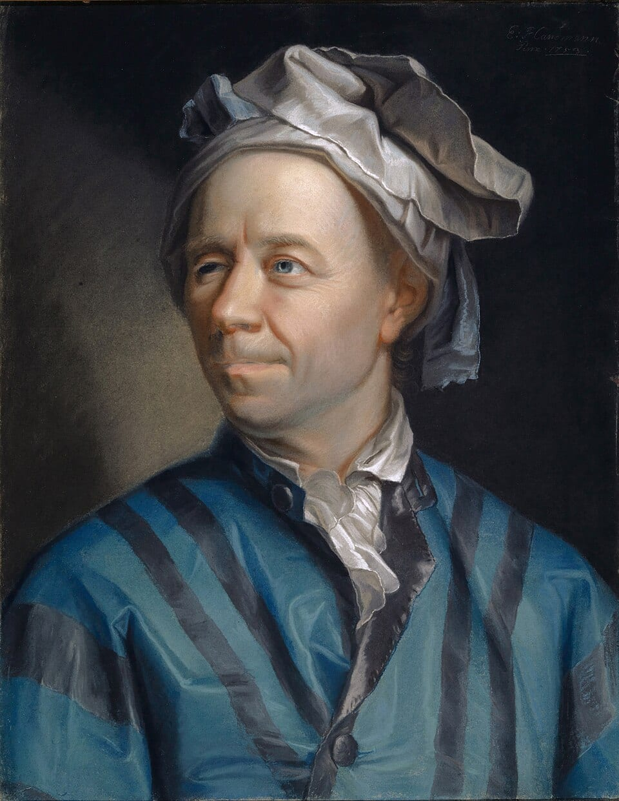
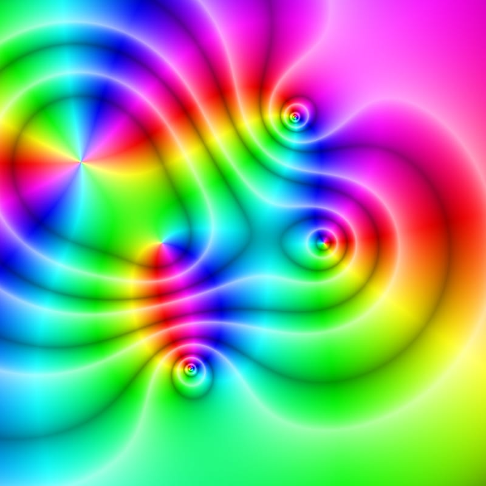

i × i = −1 (1 + i) × (1 + i) = 2i 3 + 4i sits exactly 5 steps from zero
Those three lines are complex analysis in action. The first line breaks the oldest rule in arithmetic — "nothing squares to a negative" — by inventing a new number that does exactly that. The second looks innocent, until you notice something spooky: multiplying spun the number straight up, onto a whole new axis. The third says a number built from 3 and 4 sits 5 steps from home — a clue that these new numbers have a length and a direction, like arrows. Right now those lines might look mysterious. That's okay! By the end of this lesson, you'll understand all three — and you'll know exactly why each one works.
Why do people care? Because complex numbers are the math of SPINNING and STRETCHING — and the world is full of things that spin, wave, and wiggle. The electricity in your walls, the signals inside your phone, the lift under an airplane wing, the quantum rules inside every atom — all of it is computed with these numbers. They were invented about 500 years ago by Italian mathematicians who kept hitting equations with no answer, and the grown-up subject that grew from them — complex analysis — is often called the most beautiful math ever discovered. The best news: the big ideas are built from things you already know — adding coordinates, small fractions, and one 2,500-year-old triangle trick.
In this lesson, you will:
- 1.Meet i — the number invented to answer the unanswerable x² = −1
- 2.Draw numbers on the complex map: right for real, up for imaginary
- 3.Add and subtract complex numbers, pile by pile
- 4.Discover that multiplying by i is a quarter turn — and ride the i-cycle
- 5.Multiply any two complex numbers with four baby multiplications
- 6.Measure lengths with Pythagoras and uncover the spin-and-stretch secret
- 7.Divide using the mirror trick — the conjugate
- 8.Learn the common mistakes so you never make them
- 9.Practice with 100 problems at the end!
How to use this lesson: Read the sections in order. Each section starts with the key idea you'll learn in it. Take your time, and try every "Your Turn" box with a pencil and paper. Ready? Let's go!
📸 Pictures

Leonhard Euler (1707–1783), one of the greatest mathematicians ever. He was the first to use the letter i for √−1! See source ↓

A picture of a complex function. Each colour shows the direction of a complex number, so the rainbow swirls show where the function spins around! See source ↓
🗺️ Your lesson map
The Number That Shouldn't Exist 🧩Lesson 2
The Complex Map — Right for Real, Up for Imaginary 🎯Lesson 3
Adding and Subtracting — Pile by Pile 🔍Lesson 4
Multiplying by i — The Quarter Turn ⚡Lesson 5
Multiplying Anything — Four Baby Multiplications 🌟Lesson 6
Length and Direction — The Spin-and-Stretch Secret 🛠️Lesson 7
The Mirror Trick — Conjugates and Division ⚠️Lesson 8
Watch Out! Common Mistakes 🧠Lesson 9
Review — The Big Picture 🏋️Practice Problems
100 problems to try 🏆Quiz
Test yourself: new questions every time!
📚 Picture Sources
- Picture 1 · Leonhard Euler. By Jakob Emanuel Handmann. Public domain. From Wikimedia Commons: https://commons.wikimedia.org/wiki/File:Leonhard_Euler.jpg
- Picture 2 · Color complex plot. By Claudio Rocchini. CC BY 2.5. From Wikimedia Commons: https://commons.wikimedia.org/wiki/File:Color_complex_plot.jpg